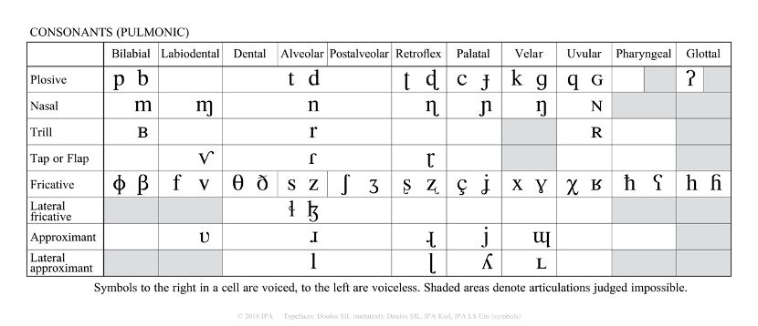
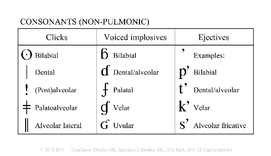
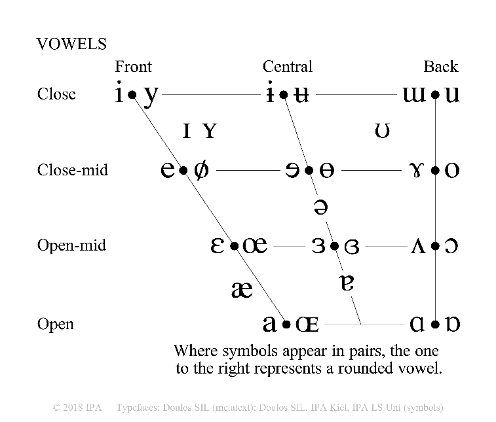
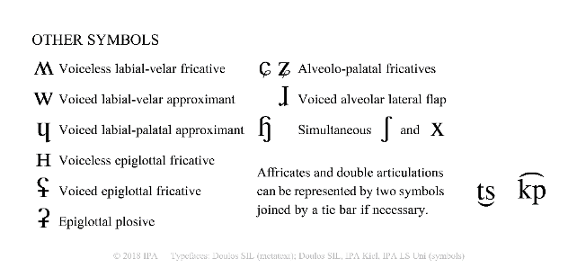

语言学
语言学研究人类的语言，计算语言学则是一门跨学科的研究领域，试图找出自然语言的规律，建立运算模型，语音合成其实就是计算语言学的子领域之一。在语音合成中，一般需要将文本转换为对应的音素，然后再将音素输入到后端模型中，因此需要为每个语种甚至方言构建恰当合理的音素体系。相关概念如下。
-
音素（phoneme）：也称音位，是能够区别意义的最小语音单位，同一音素由不同人/环境阅读，可以形成不同的发音。
-
字素（grapheme）：音素对应的文本。具体的区别参见：Phonemes, Graphemes, and Morphemes!
-
发音（phone）：某个音素的具体发音。实际上，phoneme和phone都是指的是音素，音素可具化为实际的音，该过程称为音素的语音体现。一个音素可能包含着几个不同音值的音，因而可以体现为一个音、两个音或更多的同位音。但是在一些论述中，phoneme偏向于表示发音的符号，phone更偏向于符号对应的实际发音，因此phoneme可对应无数个phone。
-
音节（syllable）：音节由音素组成。在汉语中，除儿化音外，一个汉字就是一个音节。如wo3（我）是一个音节，zhong1（中）也是一个音节。
参考资料
国际音标
国际音标（International Phonetic Alphabet，IPA）是一种通用的注音系统，一套注音体系可以标注多种语言。对于汉语来说，使用国际音标和使用拼音标注发音效果是相同的；但是如果希望实现多语言的注音，就必须采用统一的注音，IPA就是这样一种比较好的发音标注形式。
因为人类语音差异很大，有限的拉丁字母远不够用，于是就需要改变字形和借用其它语言的字母来补充。也就是说，IPA以拉丁字母（罗马字母）的小写印刷体为主，如[a]、[b]、[c]、[d]、[f]、[g]、[h]、[i]、[j]、[k]、[p]等。在不够用时，使用以下几种方法来补充，包括：
-
使用拉丁字母大写印刷体或书写体（草体），如：大写印刷体[ɴ]、[ʀ]、[ɢ]、[ʙ]、[ʜ]、a的手写体[ɑ]、v的草体[ʋ]等；
-
颠倒或者改变拉丁字母的字形，如：[ə]（倒置e）、[ɕ]（卷尾c）、[ɖ]（右弯尾d）、[ŋ]（长右腿n）等；
-
借用其它语言字母，如：[ε]（希腊语）、[θ]（希腊语)、[ł]（波兰语）、[ø]（丹麦语）、[ç]（加泰罗尼亚语）等；
-
新制字母，如：[ʃ]、[ɤ]等；
-
在字母上加符号，如：[ʉ]（加横线的u）等。
IPA的字母和发音
读音上，为照顾习惯，大多数符号仍读拉丁语或其它语言的原音。IPA追求一个字符表示一个发音，不会出现在一些语言中，如英语用"th"、"sh"表示一个发音的情况。IPA字母的发音，有些和原始的希腊字母发音相同，但有些又和英语等语言发音相同，其大致的规则包括：
-
元音字母：如[a]、[o]、[i]等发音和意大利语、西班牙语无较大差别；
-
辅音字母：如[m]、[n]、[z]、[p]、[b]的发音接近于英语；
-
其他字母：如[y]和德语或芬兰语中的y类似，而[j]与英语的y发音接近。
IPA的字母构成会随着规范的修改而变动，2018年发布的标准中，IPA的字母有107个，包括了59个肺部气流辅音，10个非肺部气流辅音，28个元音和10个其他字母，如下表所示：




在国际音标表中，同一列、或同一行的音标，在发音方法上有相同之处，因此也就具有相似的性质，这为语音的研究提供了较大的便利。"国际音标表"是语音学的基础，就如同"元素周期表"是化学的基础。一些开源工具，比如eSpeak NG Text-to-Speech、Epitran实现了各语种的字素转国际音标。但是，这些国际音标开源工具并没有提供对方言的支持，比如上海话、闽南语的字素转音素；国际音标本身识记较为复杂，学习成本比较高，并且为了照顾世界所有语种，音素的划分上较为精细，因此国际音标是语音合成中音素体系的重要参考方案，但非最佳方案。
音系学
对于语音合成来说，需要了解语言学的分支之一：音系学，以便更好地制定适用于一个语种语音合成系统的音素体系。这里需要探讨三个问题：音位数量，这里的音位和音素概念区别不大，音素不针对一个语种，是一个最小的语音单位，音位是针对一个特定语言的，具有区别意义的最小语音单位，参见音素和音位的区别与联系是什么？；语音配列，也就是语音符号的组合规律，哪些音段的组合是不被允许的，音段出现的位置有哪些限制；音系交替，音与音同时出现时，彼此受影响会导致哪些形式的变化，这涉及到音系过程。音系过程可以理解为一个音段受所处语音环境或语法环境的影响而产生变化的过程，音系过程的种类有很多，比如同化和异化两种过程。
音位数量的确定牵扯到对比分布和互补分布两个概念。如果A和B处于对比分布时，那么甲和乙处于同样的语言环境中时，就会引起意义的不同。比如英语中的[p]和[b]就处于对比分布，当它们处于相同的语言环境中时，比如pin[pin]和bin[bin]，但是两个单词的意义完全不同，因此[p]和[b]就分属两个不同的音位。而假如A和B处于互补分布时，那么甲和乙不可能出现在同样的语音环境中，例如英语中的[p]处于重读音节首时pig[pig]，往往表现为送气的[\(p^h\)]，而在[s]后面时spit[spit]，往往表现为不送气的[p]，送气的[\(p^h\)]和不送气的[p]不会出现在同一语音环境中，可以说，它们是同一个音位在不同语音环境中的音位变体。因此，音位处于对比分布，而音位变体处于互补分布。确立音位的做法便是寻找最小对比对，也就是说寻找音位时要满足：
-
在相同的语音环境。
-
单词的意思不同。最直接的做法就是找两个意义不同的的单词，并且只有在一个位置上有不同的音段，在其它位置上的音段都相同，这一对单词就是最小对比对。比如ban[ban]和man[man]这对最小对比对中，除了[b]和[m]之外，其它音段都相同，正因为[b]和[m]，这两个单词的意义也不同。因此归纳音位的原则有：对立互补原则和语音相似原则。
语音配列是一个语种中，对于一个单词、语素或音节中可能出现的元音和辅音序列制约条件的集合。比如英语单词"wtist"是不可能存在的，因为[w]是滑音（glide），而[t]则是塞擦音（plosive），在英语中如果滑音和塞擦音同时出现在词首，则塞擦音一定在滑音的前面，比如twin，因此"wtist"一定是非法英语单词。
同化是指一个音段变得和另一个音段相似的音系学过程，根据同化的方向，这一过程又可以分为顺同化和逆同化。顺同化又称遗留同化，是指后面的音段被前面的音段同化了，比如英语中的复数和动词的过去式。英语单词"cup"词缀辅音和前面词干尾的辅音在清浊上是一致的，音系学上认为复数形式本来的形式是[z]，是一个浊音，但当词干尾的辅音是清音比如[t]、[k]、[p]，这个浊辅音就会被前面的清音同化为清辅音[s]，因此"cup"的复数形式"cups"读音就是[kaps]而不是[kapz]。顺同化是从左到右的同化，逆同化就是从右到左的同化。逆同化又称为先行同化，是前面的音段被后面音段同化的过程。比如汉语普通话中，当两个第三声的字放在一起，第一个就会变成第二声，如永（yong3）、远（yuan3），组成单词"永远"时，读音为"yong2 yuan3"。
对于目前类似于Tacotron这样的端到端声学模型来说，给定的音素体系一般只需确定音位，对于各种协同发音导致的音位变体，则可以不加区分。例如对于法语这样存在同一个音素在不同单词中发音不同的语种，文本前端的音素体系可以只关注音位，音位变体由后端模型自行学习。为了模型增强可控性，也可以尝试结合词面信息，根据上下文给出音位不同的符号表示。比如s[s]这个字母，在不同语境中可能存在不同的音位变体，后面结合字母a是一个音位变体，因此将此时字母s的音位变体标记为[sa]；后面结合字母b可能又是一个音位变体，这时则将该s的音位变体标记为[sb]。